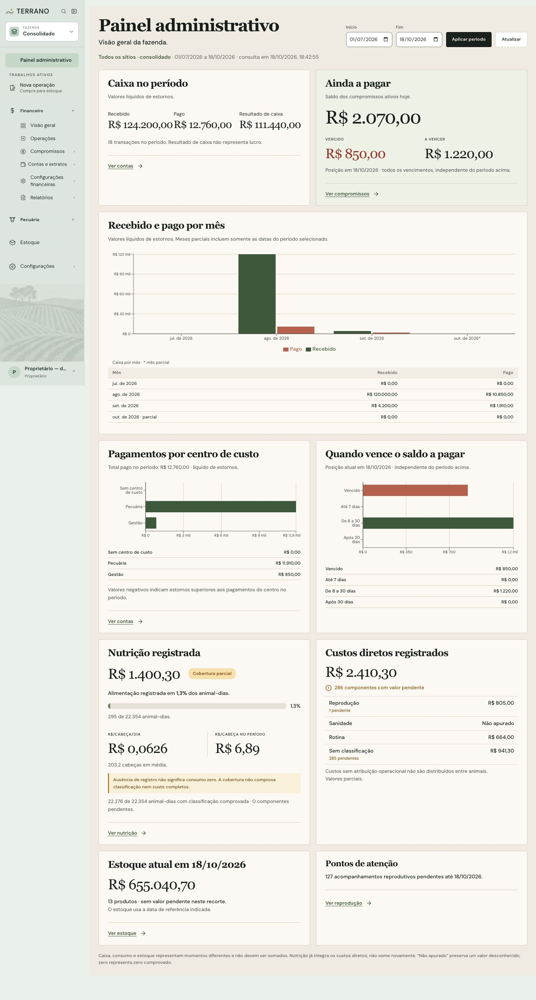
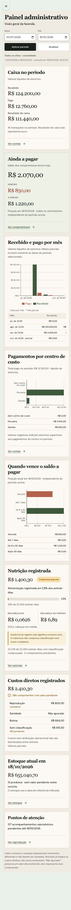

Caixa e compromissos
Transações, movimentos e saldos pendentes já registrados. Caixa e obrigações não liquidadas são medidas diferentes.
A página reúne caixa realizado, posição atual a pagar, nutrição, custos diretos, estoque e acompanhamentos. Três gráficos mostram valores mensais, pagamentos por centro de custo e compromissos por vencimento. A consulta e os cálculos são somente leitura.
Interface `/gerencial` API somente leitura · sem alteração de schemaA URL permanece /gerencial. O período e o sítio ficam visíveis no contexto; aplicar datas, atualizar e usar voltar/avançar preservam o contrato de navegação.
| Bloco | Apresentação | Interpretação |
|---|---|---|
| Caixa no período | Recebido, pago, resultado e link “Ver contas”. | Caixa realizado líquido de estornos. O resultado não representa lucro; compromissos não liquidados ficam fora. |
| Ainda a pagar | Total atual, vencido, a vencer, data de referência e link “Ver compromissos”. | Posição atual de compromissos a pagar, independente do período de caixa. |
| Recebido e pago por mês | Gráfico com recebimentos/pagamentos e tabela acessível com valores. | Usa o período selecionado; mês parcial considera apenas dias incluídos no período. |
| Pagamentos por centro de custo | Barras horizontais e rótulos/valores em texto. | Mostra pagamentos realizados líquidos de estornos no período. |
| Quando vence o saldo a pagar | Barras por faixa e valores disponíveis em texto. | Usa a posição atual; concilia com “Ainda a pagar” e não usa filtro histórico. |
| Nutrição e custos | Resumo de custo, cobertura de animal-dias, alertas de parcialidade e custos diretos por finalidade. | Nutrição já integra os custos diretos. Não há indicador separado para vacas nem linhas de origem na tela. |
| Estoque e pontos de atenção | Valor atual, situação, data de referência, quantidade de produtos distintos e acompanhamentos pendentes. | Estoque completo, parcial e desconhecido permanecem distintos; nulo é “Não apurado”, zero comprovado continua zero. |
O cálculo usa Decimal e soma o saldo pendente dos compromissos do tipo PAGAR em situação PENDENTE ou PARCIAL. O saldo é o valor original menos liquidações cuja transação está CONFIRMADA; liquidação estornada deixa de abater. Compromissos cancelados, liquidados e recebíveis não entram.
A data de referência é a data civil atual em America/Sao_Paulo. Faixas, sem sobreposição: vencido quando vencimento < hoje; até 7 dias quando vencimento está entre hoje e hoje + 7 dias inclusive; de 8 a 30 dias quando está entre hoje + 8 e hoje + 30 inclusive; após 30 dias quando vencimento > hoje + 30. Vencimento de hoje fica em “A vencer”.
O período histórico da página não filtra esse resumo. “Ver compromissos” abre a lista com situacao=pagar e o sítio ativo, sem datas; “Ver estoque” também omite datas por se tratar de posição atual.
GET /api/gerencial/resumo retorna o contrato GERENCIAL_V1. Os serviços concentram consultas no servidor, com cálculos puros separados do banco. A consulta usa transação READ ONLY. Não cria tabelas, snapshots, gravações financeiras nem novos papéis.
Transações, movimentos e saldos pendentes já registrados. Caixa e obrigações não liquidadas são medidas diferentes.
Fechamentos, participações, custos e finalidades disponíveis, preservando lacunas e limites de atribuição existentes.
Valor no corte atual pelos métodos operacionais existentes. Valor conhecido parcial soma apenas parcelas conhecidas; valor desconhecido não vira zero.
Blocos restritos devolvem apenas estado/motivo e não enviam montantes ou origens. Caixa e compromissos usam os gates financeiros existentes, incluindo ver valores, salários e investimentos, pois as categorias atuais não permitem separar esses valores com segurança. Testes automatizados cobrem bloqueio e ausência de vazamento.
Caixa, compromissos, consumo e estoque têm datas e significados próprios e seus totais não devem ser somados. Nutrição é recorte dos custos diretos; não deve ser somada novamente ao total.
Aplicação autenticada com API real e banco local autorizado fazendinha_seedatev3, período de 01/07/2026 a 18/10/2026, contexto consolidado. As dimensões dos arquivos raster foram omitidas porque o viewport e a captura de página inteira são reportados de modos diferentes.


Na consulta observada: R$ 124.200,00 recebidos, R$ 12.760,00 pagos, R$ 2.070,00 ainda a pagar (R$ 850,00 vencidos e R$ 1.220,00 a vencer) e R$ 655.040,70 de estoque classificado como completo. São valores dessa leitura local, não constantes fixas do produto.
| Verificação | Evidência | Limite |
|---|---|---|
| Testes da interface | 88 testes em 7 arquivos passaram, incluindo gráficos acessíveis, valores, vazios, bloqueios, estoque desconhecido, links e contexto do sítio. | Testes não substituem homologação completa dos destinos. |
| Testes do servidor | 33 testes em 6 arquivos passaram, incluindo compromissos e estoque. | Validação local não prova CI remoto ou produção. |
| Build | Build da aplicação passou; o Vite emitiu aviso de chunk acima de 500 kB. Depois houve apenas ajustes de CSS responsivo verificados nas capturas. | Build anterior aos últimos ajustes de CSS não substitui CI. |
| Navegador e teclado | Desktop 1440 × 1024 e celular 390 × 844 conferidos. ArrowUp mudou a data inicial, Enter aplicou a URL e voltar restaurou o período. O link de compromissos abriu “A pagar”/“Todo o período” e o valor conciliou com o painel; voltar retornou à página. Console sem erros. | Não é auditoria completa WCAG; leitor de tela e contraste instrumental não foram avaliados. |
| Revisão independente | Nenhum achado P1/P2 confirmado. Verificado cálculo, permissões, transação de leitura, estados de estoque e links. | Revisão estática não valida o uso diário pela fazenda. |
Registro detalhado da QA visual · Contrato vigente do painel